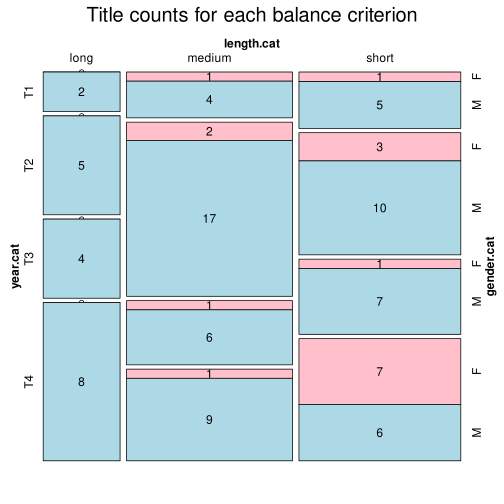

Click on a column heading to sort. Click on a text identifier to read the text (may not work in older browsers).
| Identifier | Encoding | Pages | Words | (Size) | Date (Slot) | Title | Author | Sex | Reprints |
|---|---|---|---|---|---|---|---|---|---|
| POR0001 |
eltec-1 | 150996 | (long) | 1868 (T2) | A Morgadinha dos Canaviais | Dinis, Júlio [Joaquim Guilherme Gomes Coelho] (1839-1871) | M | high | |
| POR0002 |
eltec-1 | 17416 | (short) | 1908 (T4) | Sacrificada | Castro Osório, Ana de (1872-1935) | F | low | |
| POR0003 |
eltec-1 | 131300 | (long) | 1848 (T1) | O Monge de Cister | Herculano, Alexandre (1810-1877) | M | high | |
| POR0004 |
eltec-1 | 71156 | (medium) | 1846 (T1) | Viagens na minha terra | Almeida Garrett, João Baptista da Silva Leitão de (1799-1854) | M | high | |
| POR0005 |
eltec-1 | 217462 | (long) | 1888 (T3) | Os Maias | Eça de Queirós, José Maria de (1845-1900) | M | high | |
| POR0006 |
eltec-1 | 51484 | (medium) | 1855 (T1) | O Cura de São Lourenço | Vasconcelos, Maria do Monte de Santana e (1809-1884) | F | low | |
| POR0007 |
eltec-1 | 123135 | (long) | 1868 (T2) | Uma família ingleza | Dinis, Júlio [Joaquim Guilherme Gomes Coelho] (1839-1871) | M | high | |
| POR0008 |
eltec-1 | 108451 | (long) | 1900 (T4) | A ilustre casa de Ramires | Eça de Queirós, José Maria de (1845-1900) | M | high | |
| POR0009 |
eltec-1 | 142963 | (long) | 1875 (T2) | O Crime do Padre Amaro | Eça de Queirós, José Maria de (1845-1900) | M | high | |
| POR0010 |
eltec-1 | 50353 | (medium) | 1862 (T2) | Amor de Perdição | Castelo Branco, Camilo (1825-1890) | M | high | |
| POR0011 |
eltec-1 | 41587 | (short) | 1858 (T1) | O que fazem mulheres | Castelo Branco, Camilo (1825-1890) | M | high | |
| POR0012 |
eltec-1 | 196947 | (long) | 1854 (T1) | Mistérios de Lisboa | Castelo Branco, Camilo (1825-1890) | M | high | |
| POR0013 |
eltec-1 | 40117 | (short) | 1906 (T4) | Os pobres | Brandão, Raul (1867-1930) | M | high | |
| POR0014 |
eltec-1 | 49385 | (short) | 1906 (T4) | Os Bravos do Mindelo | Fonseca, Faustino da (1871-1918) | M | low | |
| POR0015 |
eltec-1 | 145632 | (long) | 1867 (T2) | Os Fidalgos da Casa Mourisca | Dinis, Júlio [Joaquim Guilherme Gomes Coelho] (1839-1871) | M | high | |
| POR0016 |
eltec-1 | 175 | 93020 | (medium) | 1865 (T4) | A casa dos fantasmas | Silva, Luís Augusto Rebelo da (1822-1871) | M | low |
| POR0017 |
eltec-1 | 208 | 49152 | (short) | 1874 (T4) | A Lenda da Meia-Noite | Pinheiro Chagas, Manuel Joaquim (1842-1895) | M | low |
| POR0018 |
eltec-1 | 56493 | (medium) | 1908 (T4) | O Marquês da Bacalhoa | Albuquerque, António de (1866-1923) | M | low | |
| POR0019 |
eltec-1 | 26021 | (short) | 1914 (T4) | A Confissão de Lúcio | Sá-Carneiro, Mário de (1890-1916) | M | high | |
| POR0020 |
eltec-1 | 81492 | (medium) | 1917 (T4) | Amor crioulo | Botelho, Abel (1856-1917) | M | unspecified | |
| POR0021 |
eltec-1 | 26525 | (short) | 1888 (T3) | Uma Eleição Perdida | Ficalho, Francisco Manuel de Melo Breyner, Conde de (1837-1903) | M | high | |
| POR0022 |
eltec-1 | 32610 | (short) | 1892 (T3) | Noites de Cintra | Pimentel, Alberto (1849-1925) | M | low | |
| POR0023 |
eltec-1 | 58989 | (medium) | 1844 (T1) | Eurico, o Presbítero | Herculano, Alexandre (1810-1877) | M | high | |
| POR0024 |
eltec-1 | 27975 | (short) | 1873 (T2) | A filha do Cabinda | Campos, Alfredo Luís de (1856-1931) | M | low | |
| POR0025 |
eltec-1 | 58928 | (medium) | 1870 (T2) | A Rosa do Adro | Rodrigues, Manuel Maria (1847-1899) | M | high | |
| POR0026 |
eltec-1 | 110267 | (long) | 1883 (T3) | O Salústio Nogueira | Teixeira de Queirós, Francisco (1848-1919) | M | unspecified | |
| POR0027 |
eltec-1 | 58921 | (medium) | 1873 (T2) | Um conto portuguez | Mascarenhas, Miguel J. T. (?-?) | M | low | |
| POR0028 |
eltec-1 | 26539 | (short) | 1875 (T2) | A senhora viscondessa | Lima, Sebastião de Magalhães (1850-1928) | M | low | |
| POR0029 |
eltec-1 | 25948 | (short) | 1876 (T2) | O cristão novo | Macedo, Diogo de (1844-1938) | M | low | |
| POR0030 |
eltec-1 | 47166 | (short) | 1861 (T2) | A chave do enigma | Castilho, António Feliciano de (1800-1875) | M | low | |
| POR0031 |
eltec-1 | 52400 | (medium) | 1897 (T3) | Pero da Covilhã | Brandão, Zeferino Norberto Gonçalves (1842-1910) | M | low | |
| POR0032 |
eltec-1 | 77983 | (medium) | 1899 (T3) | Transviado | Lima, Jaime de Magalhães (1859-1936) | M | low | |
| POR0033 |
eltec-1 | 119384 | (long) | 1904 (T4) | Os filhos do padre Anselmo | Albergaria, António da Costa Couto Sá de (1850-1921) | M | low | |
| POR0034 |
eltec-1 | 54874 | (medium) | 1874 (T2) | O Conde de S. Luís | Melo, Tomás de (1836-1905) | M | low | |
| POR0035 |
eltec-1 | 42234 | (short) | 1900 (T4) | O Exilado | Figueiredo, Maurícia C. de (1866-1923) | F | low | |
| POR0036 |
eltec-1 | 49574 | (short) | 1881 (T3) | A Divorciada | Vieira, José Augusto (1856-1890) | M | low | |
| POR0037 |
eltec-1 | 235443 | (long) | 1905 (T4) | A Ala dos Namorados | Campos Junior, António (1850-1917) | M | unspecified | |
| POR0038 |
eltec-1 | 61739 | (medium) | 1843 (T1) | O Bobo | Herculano, Alexandre (1810-1877) | M | high | |
| POR0039 |
eltec-1 | 41263 | (short) | 1846 (T1) | O Engeitado | Sarmento, Inácio Pizarro de Morais (1807-1870) | M | low | |
| POR0040 |
eltec-1 | 38682 | (short) | 1857 (T1) | Os tripeiros | Lousada, António José Coelho (1828-1859) | M | low | |
| POR0041 |
eltec-1 | 62972 | (medium) | 1916 (T4) | A morte vence | Grave, João José (1872-1934) | M | low | |
| POR0042 |
eltec-1 | 62803 | (medium) | 1904 (T4) | Viriato | Braga, Teófilo (1843-1924) | M | high | |
| POR0043 |
eltec-1 | 40044 | (short) | 1886 (T3) | O Brasileiro Soares | Magalhães, Luís de (1859-1935) | M | high | |
| POR0044 |
eltec-1 | 14919 | (short) | 1877 (T2) | Alice | Carvalho, Maria Amália Vaz de (1847-1921) | F | unspecified | |
| POR0045 |
eltec-1 | 86063 | (medium) | 1870 (T2) | A ermida de Castromino | Vasconcelos, Antonio Augusto Teixeira de (1816-1878) | M | low | |
| POR0046 |
eltec-1 | 54630 | (medium) | 1875 (T2) | Os selvagens | Amorim, Francisco Gomes de (1827-1891) | M | unspecified | |
| POR0047 |
eltec-1 | 56942 | (medium) | 1863 (T2) | Infaustas Aventuras de Mestre Marçal Estouro | Leal, José da Silva Mendes (1818-1886) | M | low | |
| POR0048 |
eltec-1 | 12499 | (short) | 1864 (T2) | A pálida estrela | Bulhão Pato, Raimundo António de (1828-1912) | M | unspecified | |
| POR0049 |
eltec-1 | 72321 | (medium) | 1891 (T3) | O último cartuxo da Scala Caeli de Évora | Barata, António Francisco (1836-1910) | M | low | |
| POR0050 |
eltec-1 | 79883 | (medium) | 1866 (T2) | A conquista de Lisboa | Almeida, Carlos Pinto de (1831-1899) | M | unspecified | |
| POR0051 |
eltec-1 | 65304 | (medium) | 1917 (T4) | Húmus | Brandão, Raul (1867-1930) | M | high | |
| POR0052 |
eltec-1 | 44142 | (short) | 1903 (T4) | A Farsa | Brandão, Raul (1867-1930) | M | high | |
| POR0053 |
eltec-1 | 105866 | (long) | 1891 (T3) | O Barão de Lavos | Botelho, Abel (1856-1917) | M | high | |
| POR0054 |
eltec-1 | 137746 | (long) | 1901 (T4) | Amanhã | Botelho, Abel (1856-1917) | M | high | |
| POR0055 |
eltec-1 | 56675 | (medium) | 1873 (T2) | O Annel Mysterioso | Pimentel, Alberto (1849-1925) | M | low | |
| POR0056 |
eltec-1 | 20951 | (short) | 1892 (T3) | O Dr. Luís Sandoval | Moderno, Alice (1867-1946) | F | low | |
| POR0057 |
eltec-1 | 33556 | (short) | 1849 (T2) | Memórias de um doido | Mendonça, António Pedro Lopes de (1826-1865) | M | unspecified | |
| POR0058 |
eltec-1 | 71342 | (medium) | 1895 (T3) | A guerrilha de Frei Simão | Pimentel, Alberto (1849-1925) | M | low | |
| POR0059 |
eltec-1 | 50041 | (medium) | 1875 (T2) | Um duelo nas sombras | Barata, António Francisco (1836-1910) | M | low | |
| POR0060 |
eltec-1 | 24804 | (short) | 1881 (T3) | A ruiva | Almeida, Fialho de (1857-1911) | M | unspecified | |
| POR0061 |
eltec-1 | 48924 | (short) | 1871 (T2) | Herança de lágrimas | Souza, Lopo de [Ana Plácido] (1831-1895) | F | low | |
| POR0062 |
eltec-1 | 18320 | (short) | 1908 (T4) | Diário de uma criança | Castro Osório, Ana de (1872-1935) | F | low | |
| POR0063 |
eltec-1 | 67358 | (medium) | 1870 (T2) | O Mistério da Estrada de Sintra | Ramalho Ortigão, José Duarte (1836-1915) | M | high | |
| POR0064 |
eltec-1 | 47374 | (short) | 1873 (T2) | O Manuelinho de Évora | Barata, António Francisco (1836-1910) | M | low | |
| POR0065 |
eltec-1 | 44520 | (short) | 1914 (T4) | A Marquesa de Vale Negro | O'Neil, Maria (1873-1932) | F | low | |
| POR0066 |
eltec-1 | 97 | 12243 | (short) | 1916 (T4) | Inocente | Castro e Almeida, Virgínia de (1874-1945) | F | low |
| POR0067 |
eltec-1 | 69033 | (medium) | 1867 (T2) | Febo Moniz | Oliveira Martins, Joaquim Pedro de (1845-1894) | M | unspecified | |
| POR0068 |
eltec-1 | 50822 | (medium) | 1899 (T3) | Ele | Campos, Claudia de (1859-1916) | F | low | |
| POR0069 |
eltec-1 | 19766 | (short) | 1867 (T2) | Henriqueta | Sousa, Maria Peregrina de (1809-1886) | F | low | |
| POR0070 |
eltec-1 | 37359 | (short) | 1857 (T1) | O soldado de Aljubarrota | Bettencourt, Matilde Isabel de Santana e Vasconcelos Moniz (1805-1888) | F | low | |
| POR0071 |
eltec-1 | 28354 | (short) | 1881 (T3) | O frade arrábido | Oliveira Mascarenhas, Joaquim Augusto de (1847-1918) | M | low | |
| POR0072 |
eltec-1 | 67701 | (medium) | 1900 (T3) | Os Caramurús | Lobo de Ávila, Artur (1855-1945) | M | low | |
| POR0073 |
eltec-1 | 73261 | (medium) | 1867 (T2) | Tempestades do coração | Moreira, João Baptista de Matos (1845-1899) | F | low | |
| POR0074 |
eltec-1 | 100553 | (long) | 1900 (T4) | Filho das ervas | Dias, Carlos Malheiro (1875-1941) | M | unspecified | |
| POR0075 |
eltec-1 | 73750 | (medium) | 1906 (T4) | O agitador | Pinto, Fortunato Correia (18??-19??) | M | low | |
| POR0076 |
eltec-1 | 57515 | (medium) | 1894 (T3) | No tempo dos francezes | Benevides, Francisco da Fonseca (1836-1911) | M | high | |
| POR0077 |
eltec-1 | 46482 | (short) | 1857 (T1) | O médico do deserto | Bastos, José Joaquim Rodrigues de (1777-1862) | M | low | |
| POR0078 |
eltec-1 | 70630 | (medium) | 1908 (T4) | O agonizar de uma dinastia | Noronha, Eduardo de (1859-1948) | M | low | |
| POR0079 |
eltec-1 | 93632 | (medium) | 1879 (T2) | Margarida | Pinto, Júlio Lourenço (1842-1907) | M | low | |
| POR0080 |
eltec-1 | 196918 | (long) | (T4) | O Conde de Castel Melhor | Câmara, João Maria Evangelista Gonçalves Zarco da (1852-1908) | M | low | |
| POR0081 |
eltec-1 | 62450 | (medium) | 1878 (T2) | Da parte d'el-rei | Sá, António Manuel da Cunha e (1854-1909) | M | low | |
| POR0082 |
eltec-1 | 84276 | (medium) | 1858 (T1) | A vida em Lisboa | Machado, Júlio César (1835-1890) | M | unspecified | |
| POR0083 |
eltec-1 | 13392 | (short) | 1908 (T4) | A vida por um prejuízo | Pestana, Alice (1860-1929) | F | low | |
| POR0084 |
eltec-1 | 49006 | (short) | 1866 (T2) | Os Brâmanes | Gomes, Francisco Luís (1829-1869) | M | low | |
| POR0085 |
eltec-1 | 74945 | (medium) | 1863 (T2) | Providência | Sarmento, Augusto (1835-?) | M | low | |
| POR0086 |
eltec-1 | 23596 | (short) | 1912 (T4) | Marina | Pinho, Maria Benedicta Mousinho de Albuquerque (1865-1939) | F | low | |
| POR0087 |
eltec-1 | 129113 | (long) | 1908 (T4) | Os quatro reis impostores | Mesquita, Marcelino (1856-1919) | M | low | |
| POR0088 |
eltec-1 | 134544 | (long) | 1864 (T2) | Os miseráveis da aristocracia | Varela, A.J. Pereira (?-1878) | M | low | |
| POR0089 |
eltec-1 | 13345 | (short) | 1868 (T2) | Os canibais | Carvalhal, Álvaro do (1844-1868) | M | high | |
| POR0090 |
eltec-1 | 15474 | (short) | 1892 (T3) | Lisboa no Ano Três Mil | Figueiredo, Cândido de (1846-1925) | M | unspecified | |
| POR0091 |
eltec-1 | 88638 | (medium) | 1876 (T2) | El-rei dinheiro | Gama, Arnaldo (1828-1869) | M | unspecified | |
| POR0092 |
eltec-1 | 58655 | (medium) | 1878 (T2) | A infâmia de Frei Quintino | Loureiro, Urbano (1845-1880) | M | low | |
| POR0093 |
eltec-1 | 55384 | (medium) | 1874 (T2) | Mathilde | Sá, Ana Maria Ribeiro de (?-?) | F | low | |
| POR0094 |
eltec-1 | 43928 | (short) | 1862 (T2) | Arzila | Pinheiro, Bernardino Pereira (1837-1896) | M | low | |
| POR0095 |
eltec-1 | 55904 | (medium) | 1905 (T4) | A rua do oiro | Mesquita, Alfredo de (1871-1931) | M | low | |
| POR0096 |
eltec-1 | 47077 | (short) | 1858 (T1) | Elvenda, ou Conquista de Coimbra por Fernando Magno | Coutinho, Manuel da Cruz Pereira (1808-1880) | M | low | |
| POR0097 |
eltec-1 | 125845 | (long) | 1906 (T4) | O Tio João Gil | Lobo, Francisco Barros (? - ?) | M | low | |
| POR0098 |
eltec-1 | 42477 | (short) | 1901 (T4) | A bruxa | Loureiro, Augusto (1840-?) | M | low | |
| POR0099 |
eltec-1 | 77224 | (medium) | 1903 (T4) | Ambições | Castro Osório, Ana de (1872-1935) | F | low | |
| POR0100 |
eltec-1 | 134088 | (long) | 1889 (T3) | A senhora duquesa | Cordeiro, Luciano (1844-1900) | M | low |